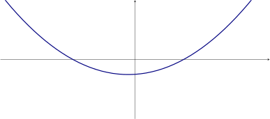

Here we study the derivative of a function, as a function, in its own right.
The derivative of a function, as a function
We know that to find the derivative of a function at a point we write However, if we
replace the given number with a varible , we now have This tells us the
instantaneous rate of change at any given point .
The notation:
means take the derivative of first, then evaluate at .
In other words, given a function of
Let . What is ?
because is a number, and a number cooresponds to a horizontal
line, which has a slope of zero. because is a line with slope . We cannot solve this
problem yet.
Here we see the graph of .

Describe when is positive. Describe when is negative. When is positive, is
positiveincreasingnegtivedecreasing
. When is negative, is
positiveincreasingnegtivedecreasing
Which of the following graphs could be ?
The derivative as a function of functions
While writing is viewing the derivative of as a function in its own right,
the derivatve itself is in fact a function that maps functions to functions,
As a function, is one-to-one?
Many different functions share the same derivative since the derivative
recordes only the slope of the tangent line and not the value, or height.